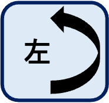
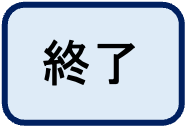
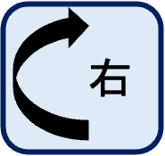

<!DOCTYPE html>
<html>
<head>
    <script src="src/jspsych-6.1.0/jspsych.js"></script>
    <script src="src/jspsych-6.1.0/plugins/jspsych-html-keyboard-response.js"></script>
    <script src="src/jspsych-6.1.0/plugins/jspsych-fullscreen.js"></script>
    <script src="src/jspsych-psychophysics-2.0/jspsych-psychophysics.js"></script>
    <link rel="stylesheet" href="src/jspsych-6.1.0/css/jspsych.css"></link>
</head>

<body bgcolor="#FFF", text="#000">
    <script type="text/javascript">

      /* 課題に関するコードを以下に書く */
      var fullscreen = {
        type: 'fullscreen',
        message: '<p>以下のボタンをクリックすると，画面は全画面表示に切り替わります。全画面表示を止めたい場合はEscキーを押してください。</p>',
        button_label: "全画面表示に切り替え",
        fullscreen_mode: true
      };
      var welcome = {
        type: "html-keyboard-response",
        stimulus: "これから画面上に赤色と青色の線が出てきます。<br>２つは異なった角度になっていますので，<br>青色の線を回転させて赤色の線と同じ角度になるように調整してください。<br><br>青色の線は左右の「右」もしくは「左」ボタンをクリックすると回転できます。<br>赤色の線と同じ角度になったら，「終了」ボタンをクリックしてください。<br><br>用意ができたら，キーボードのキーをどれか押して始めてください。"
      };

      /* タイムラインの設定 */
      var timeline = [];
      /* timeline.push(fullscreen); */
      timeline.push(welcome);

      var line_blue = {
        obj_type: 'line',
        startX: 800, // location in the canvas
        startY: 400,
        angle:  90,
        line_length: 100,
        line_width: 3,
        line_color: 'blue'
      }

      var line_red = {
        obj_type: 'line',
        startX: 200, // location in the canvas
        startY: 400,
        angle:  0,
        line_length: 100,
        line_width: 3,
        line_color: 'red'
      }

      /* 回転の教示 */
      var text_rotate = {
       obj_type: 'text',
       startX: 120,
       startY: 680,
       content: '青い線を回転させるために\nボタンを押してください',
       font: "16px 'Arial'",
       text_color: 'black'
      }

      /* 終了の教示 */
      var text_finish = {
       obj_type: 'text',
       startX: 880,
       startY: 680,
       content: '２つの線の方向が同じになったら\n「終了」を押してください',
       font: "16px 'Arial'",
       text_color: 'black',
      }

      var blue_angle = 0;

      var trial = {
          type: 'psychophysics',
          response_type: 'button',
          stimuli: [line_blue,line_red,text_rotate,text_finish],
          button_choices: ['<div style="position: absolute; top: 80%; right: 62%"></div>',
          '<div style="position: absolute; top: 80%; right: 47%"></div>',
          '<div style="position: absolute; top: 80%; right: 32%"></div>'],
          button_html:  '<button class="jspsych-btn">%choice%</button>',
          canvas_width: 1000,
          canvas_height: 800,
          background_color: "white",
          on_finish: function(data){
            data.blue_angle = line_blue.angle;
            data.blue_length = line_blue.line_length;
            data.blue_X = line_blue.startX;
            data.blue_Y = line_blue.startY;
            data.red_angle = line_red_angle[0];
            data.red_X = line_red.angle;
            data.red_Y = line_red.startY;
          }
      }

      /* In R
      sample(c(0, 15, 30, 45, 60, 75, 90, 105, 120, 135, 150, 165))
      sample(c(100, 50, 25, 100, 50, 25, 100, 50, 25, 100, 50, 25))
      */
      var line_red_angle = [60, 165, 150, 135, 120,  90,   0,  30,  15,  45, 105,  75];
      var line_blue_angle = [45, 60, 15,  165, 105, 135, 120,  90,  75,  30,  150,   0];
      var line_blue_length = [50, 100,  25,  50,  25,  50, 100, 100,  50,  25, 100,  25];
      var line_blue_x = [800,800,800,800,800,800,800,800,800,800,800,800];
      var line_blue_y = [200, 500, 100, 450,200, 500, 100, 450,200, 500, 100, 450];
      var line_red_x = [200,200,200,200,200,200,200,200,200,200,200,200];
      var line_red_y = [200, 500, 100, 450,200, 500, 100, 450,200, 500, 100, 450];

      var trial_n = 12;
      var trial_i = 0;

      /* trial 1*/
      line_blue.angle = line_blue_angle[0];
      line_blue.line_length = line_blue_length[0];
      line_blue.startX = line_blue_x[0];
      line_blue.startY = line_blue_y[0];
      line_red.angle = line_red_angle[0];
      line_red.startX = line_red_x[0];
      line_red.startY = line_red_y[0];

      for(var i = 0; i < trial_n; i++) {
        var rotate_node = {
          timeline: [trial],
          loop_function: function(){
            var last_select = jsPsych.data.get().last(1).values()[0].button_pressed;
            /* var response_blue_angle = line_blue.angle; */
            if(last_select == "2"){
              line_blue.angle = line_blue.angle + 6;
              blue_angle = line_blue.angle;
              return true;
            } else if(last_select == "0"){
              line_blue.angle = line_blue.angle - 6;
              blue_angle = line_blue.angle;
              return true;
            } else {
              if(trial_i < trial_n){
                trial_i = trial_i +1;
                blue_angle = line_blue.angle;
                line_blue.angle = line_blue_angle[trial_i];
                line_blue.line_length = line_blue_length[trial_i];
                line_blue.startX = line_blue_x[trial_i];
                line_blue.startY = line_blue_y[trial_i];
                line_red.angle = line_red_angle[trial_i];
                line_red.startX = line_red_x[trial_i];
                line_red.startY = line_red_y[trial_i];
                return false;
              }
                return false;
            }
          },

        };
        timeline.push(rotate_node);
      }

      /* 課題開始 */
      jsPsych.init({
        timeline: timeline,
        on_finish: function() {
          jsPsych.data.displayData();
        }
      });

    </script>
</body>
</html>
